Записанный build: vs-2026-09-15T06:50:49.747Z · Стенд P0. Автоматизированный водитель отправляет обычные события клавиатуры. Видео без ускорения и монтажных переходов, нажатия видны на кнопках. Это Chromium на компьютере с эмуляцией landscape, не проверка реального телефона.
Полный заезд: 120.98 → 105.40 с; собранные монеты: 16 → 78; эвакуаций 0; checkpoints 76. Длина 605.64u не менялась.
Одинаковые корпус, водитель, четыре тарелки, подушка и timestep1/60. Средняя скорость на прямой за2–8с; установившаяся на10с; торможение с4u/s до покоя корпуса и груза. Чайник с8кг не достигает4u/s за20с. Скорости здесь в единицах Rapier/с; инженерная модель использует метровый прототип, художественная кухня изображает1u как5см.
| Сборка | Средняя скорость | 0→3,с | На10с | Подъём | Тормозной путь,u |
|---|---|---|---|---|---|
| Миксер · без груза | 5.29 → 6.68 | 0.50 → 0.52 | 5.29 → 6.68 | 5.02 → 6.29 | 0.90 → 0.92 |
| Миксер · 8 кг | 4.70 → 5.63 | 1.43 → 1.48 | 4.74 → 5.81 | 4.00 → 4.74 | 1.11 → 1.09 |
| Бензопила · без груза | 5.29 → 6.70 | 0.45 → 0.48 | 5.29 → 6.69 | 5.06 → 6.35 | 1.98 → 2.03 |
| Бензопила · 8 кг | 4.94 → 6.11 | 1.07 → 1.08 | 4.94 → 6.14 | 4.59 → 5.59 | 1.39 → 1.40 |
| Чайник · без груза | 2.24 → 2.67 | 4.97 → 4.85 | 3.84 → 4.85 | 3.25 → 4.11 | — → 0.99 |
| Чайник · 8 кг | 0.42 → 0.46 | — → — | 2.34 → 2.89 | 1.19 → 1.47 | — → — |
Форсаж миксера: пик 6.36 → 8.05u/s. В новом балансе за2.8с: без форсажа 18.77u, с ним 22.35u. Масса, сцепление, timestep и расход сохранены. Миксер: момент100→80Н·м, предел16→20.5рад/с; бензопила155→125Н·м при том же пределе. Их пиковая мощность почти прежняя, передача ориентирована на более высокую скорость. Паровой привод сохраняет125Н·м, предел12→15.4рад/с. Для остановки с высокой скорости ограничен момент тормоза; горячие миксер и бензопила плавно падают до15% момента при120°C, трёхсекундное аварийное отключение сохранено.
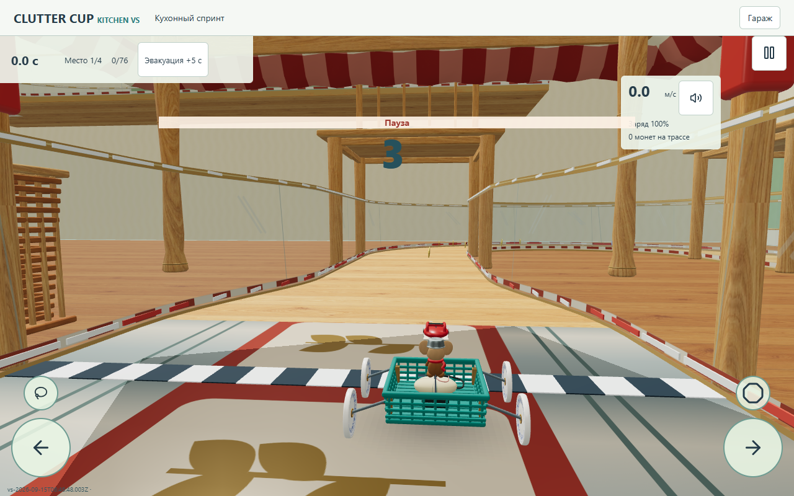
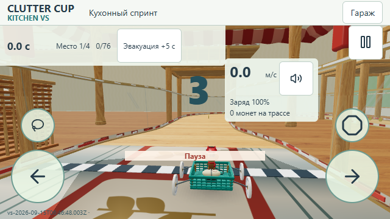
17 цепочек,90 монет,14 бонусных точек. Все монеты по1, без старого скрытого потолка16. Базовые награды120/90/70/50 и цена коробки250 сохранены. Теоретический максимум победителя210 вместо136; противоположные линии и соперники уменьшают фактический сбор. Бонусы в спринте одноразовые, монеты не возрождаются, повторное начисление финиша защищено сохранённой транзакцией.
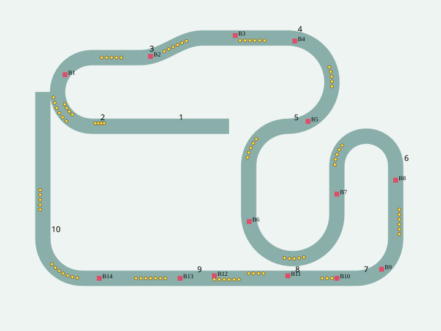
| Сектор | Расстояние,u | Монет | Бонус: смещение от начала сектора, поперечное смещение |
|---|---|---|---|
| 1. cloth | 0.00–32.00 | 4 | |
| 2. chairs | 32.00–95.97 | 15 | B1 shield: +30, бок -1 |
| 3. baseboard | 95.97–157.48 | 12 | B2 boost: +4, бок 0 B3 grip: +40, бок 1 |
| 4. fridge | 157.48–214.02 | 5 | B4 shield: +3, бок -1 B5 energy: +48, бок 0 |
| 5. pantry | 214.02–373.38 | 15 | B6 cooling: +48, бок 0 B7 energy: +110, бок 0 |
| 6. porcelain | 373.38–428.51 | 6 | B8 foam: +6, бок 0 B9 grip: +44, бок 0 |
| 7. sink | 428.51–456.51 | 4 | B10 shield: +8, бок 0 |
| 8. crumbs | 456.51–496.51 | 10 | B11 foam: +0, бок -1 B12 cooling: +30, бок -1 |
| 9. sunny | 496.51–565.64 | 14 | B13 boost: +4, бок 0 B14 energy: +37, бок 0 |
| 10. tea | 565.64–605.64 | 5 |
Одинаковый замороженный старт, Chromium/D3D11,844×390,DPR1,Standard,180 фактически отрисованных кадров. Это не GPU-таймер и не физический телефон.
| Буфер | p50/p95,мс | Draw calls | |
|---|---|---|---|
| before | 844×348 | 33.20/37.80 | 118 |
| after | 844×348 | 33.30/36.50 | 116 |
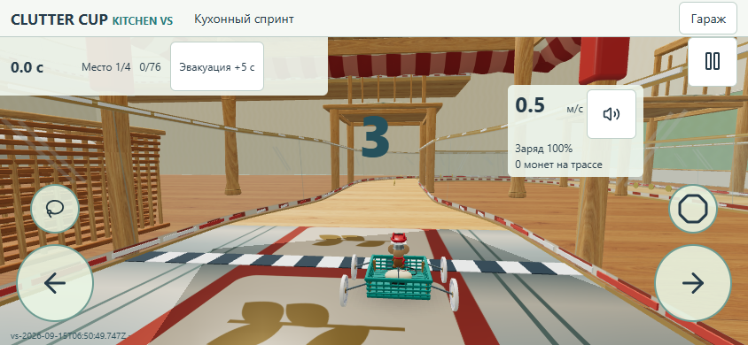
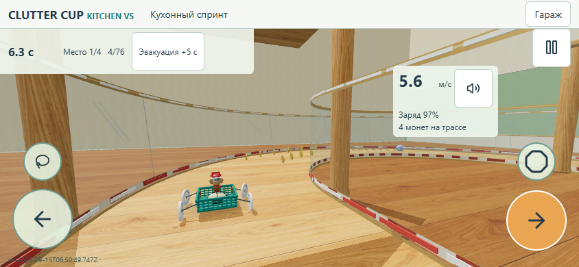
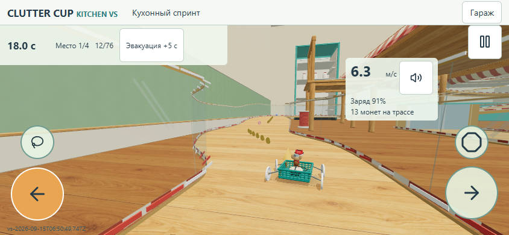
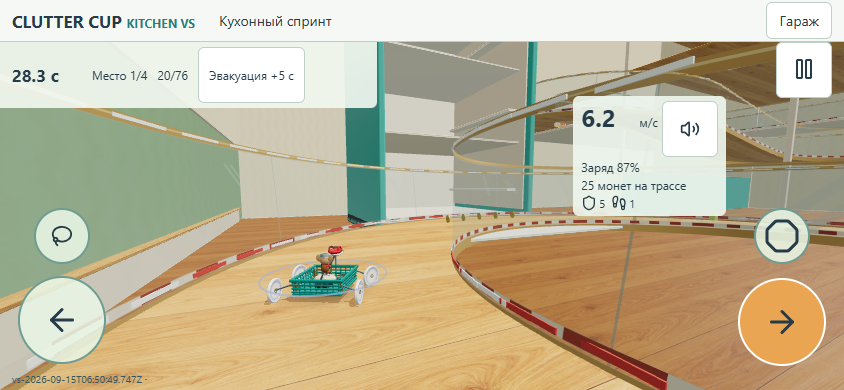
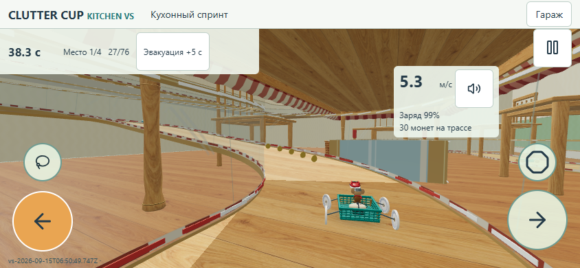
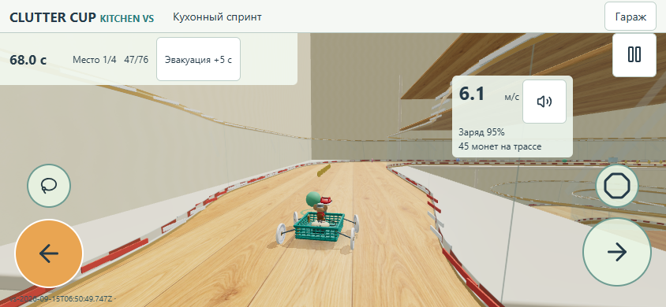
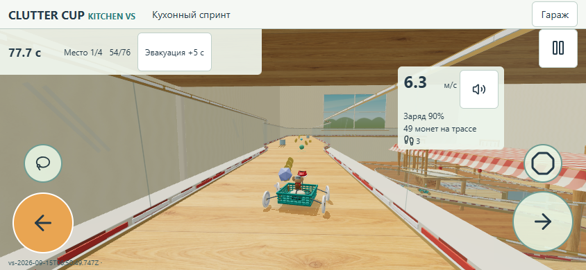
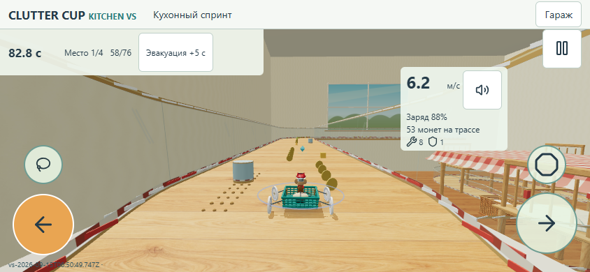
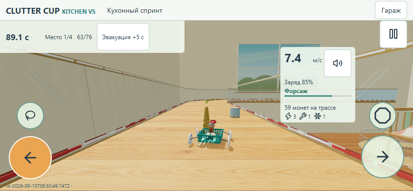
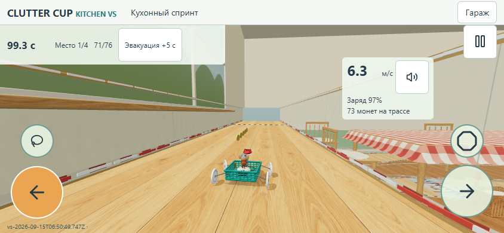
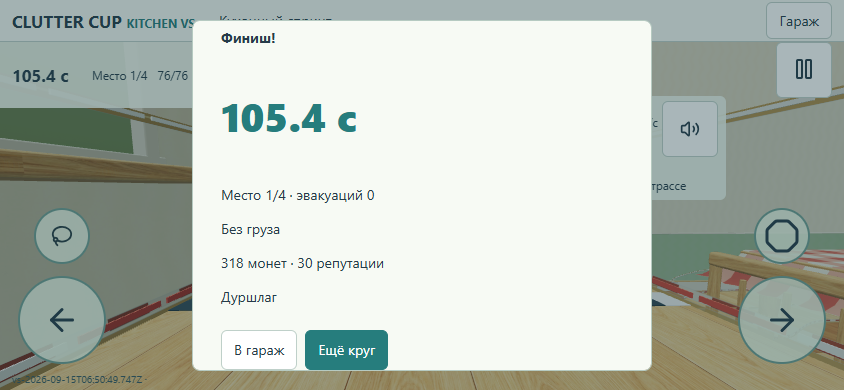
Остальные черновые художественные сектора не переоформлялись. Улучшения управления, физического темпа и наград не объявляются финальным оформлением кухни.
Первый подбор монеты: 5.17с; бонуса: 11.72с. Отброшенное браузером время догоняющих шагов: до 4.93с, после 14.71с. Видео показывает реальную частоту работы стенда, без ускорения игрового времени.
| Вход в сектор | До,с | После,с | Монет накоплено |
|---|---|---|---|
| cloth | 0.00 | 0.00 | 0 |
| chairs | 7.25 | 6.20 | 4 |
| baseboard | 19.55 | 17.85 | 13 |
| fridge | 31.97 | 28.10 | 25 |
| pantry | 42.85 | 38.08 | 30 |
| porcelain | 76.60 | 67.93 | 45 |
| sink | 87.58 | 77.48 | 49 |
| crumbs | 93.85 | 82.70 | 53 |
| sunny | 101.68 | 89.10 | 59 |
| tea | 113.62 | 99.27 | 73 |
Времена сняты через8u после начала сектора. Входные события отправляет скрипт, решения человека и производительность настоящего телефона этим не подтверждаются. Чайник с8кг сохраняет медленный разгон с набором давления; повышенный предел оборотов не заменяет момент под нагрузкой. Это не одинаковое усиление всех приводов.
p50/p95 времени кадра до: 33.90/53.20мс; после: 33.80/86.40мс. В полной симуляции остаются CPU-просадки, даже когда отрисовка неподвижной сцены сопоставима. Запись до сделана раньше в этой сессии, это не изолированный CPU-профиль датчиков. Стабильные60fps и реальный телефон не заявляются.
На финальном экране318 монет:78 собранных +120 за победу +120 за первое достижение победителя. Повторное достижение не начисляется.